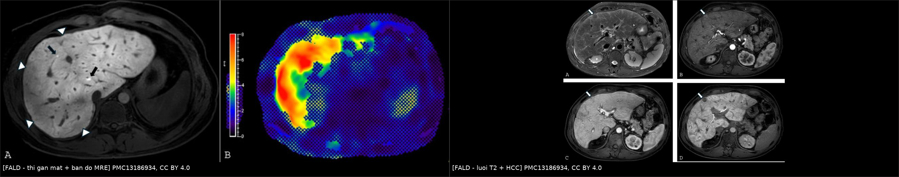
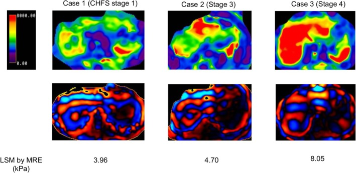
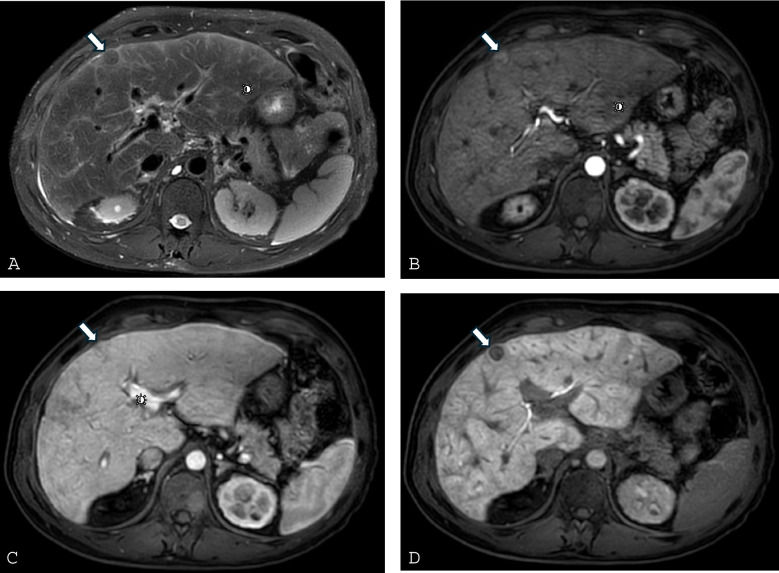
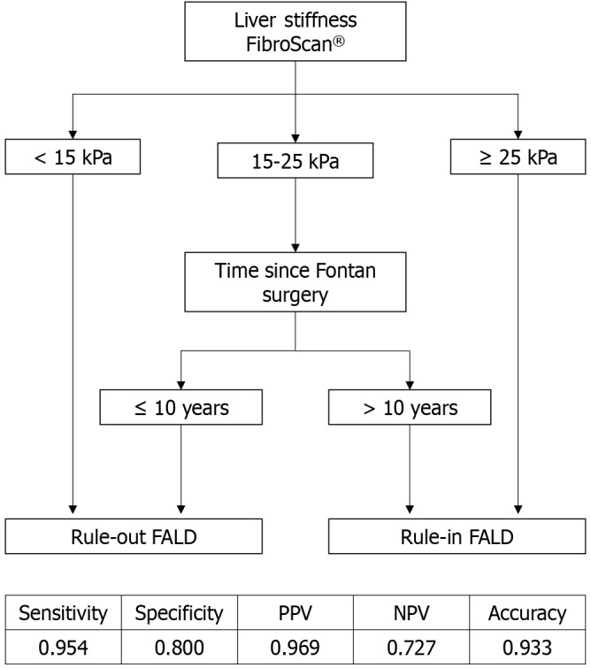

3137 — Bệnh gan do tuần hoàn Fontan (FALD): xơ gan sung huyết, elastography bị nhiễu và tầm soát HCC / Fontan-associated liver disease
Tags: pattern:gan-sung-huyet pattern:xo-hoa pattern:nut-gan vung:gan vung:bung score:VAST score:MELD-XI protocol:elastography protocol:MRI-gan incidentaloma:nut-gan
Mức chắc chắn (certainty): tổng hợp y văn (literature synthesis) — biên từ tổng quan Current Cardiology Reports 2026 (PMC13186934, CC BY 4.0), đoàn hệ 120 bệnh nhân FALD theo dõi trung vị 50,0 tháng (Hepatology Communications 2026, PMC12947994), nghiên cứu 91 bệnh nhân đo độ cứng gan bằng FibroScan (World J Gastroenterol 2025, PMC11924006) và nghiên cứu MRI/MRE ở FALD (JGH Open 2025, PMC12411670). Nhóm không có bệnh nhân của mình.
Câu chốt: sau Fontan, áp lực tĩnh mạch trung tâm cao được truyền thẳng vào tĩnh mạch gan và xoang gan, nên gan sung huyết trước, xơ hóa sau. Hệ quả kép cho người đọc hình ảnh: (1) gan sung huyết tự tạo bờ nốt và độ cứng cao giả xơ gan — elastography không dùng để chẩn đoán xơ gan ở nhóm này; (2) LI-RADS không áp dụng được, vì nốt lành (FNH-like) giữ thuốc gan mật và ngấm mạnh thì động mạch giống HCC. Tầm soát phải là siêu âm + AFP mỗi 6–12 tháng, nốt > 10 mm → CT/MRI đa thì.
1. Tổng quan bệnh học – cơ chế hình ảnh (TẠI SAO)
1.1 Sinh lý bệnh: một "hệ thống thoát nước" bị dâng mức
- Tuần hoàn Fontan nối tĩnh mạch hệ thống trực tiếp vào động mạch phổi, không có thất phụ dưới phổi bơm máu lên phổi. Dòng phổi chỉ chạy nhờ chênh áp tĩnh mạch hệ thống – nhĩ trái, nên CVP cao là điều kiện sống còn — và chính CVP cao đó truyền ngược vào tĩnh mạch gan.
- Hệ quả huyết động: gradient cửa–gan giảm, dòng cửa giảm, phản ứng đệm động mạch gan (hepatic arterial buffer response) bù trừ — nhưng cơ chế này thất bại khi áp lực cửa vượt ~ 20 mmHg, dẫn tới thiếu máu vùng 3 (zone 3) và hoại tử tế bào gan (PMC13186934).
- TẠI SAO xơ hóa xuất hiện sớm và gần như phổ quát: đây là quá trình cơ học — tế bào nội mô xoang bị căng giãn giải phóng chemokine, tế bào hình sao (HSC) hoạt hóa và sản xuất fibronectin/collagen với rất ít thâm nhiễm viêm. Nghiên cứu tử thiết cho thấy xơ hóa quanh xoang 65–91% và xơ hóa khoảng cửa 30–57% chỉ vài ngày đến vài tuần sau Fontan; xơ hóa gần như phổ quát sau 10 năm; xơ gan ~43% ở mốc 30 năm sau mổ (PMC13186934).
- Dịch tễ: dân số Fontan ước 66/1 triệu dân (2020), dự kiến ~79/1 triệu (2030); sống 10 năm > 90–95% với mổ sau 2001 — nghĩa là số bệnh nhân FALD sẽ tăng chứ không giảm (PMC13186934).
1.2 Vật lý hình ảnh: vì sao FALD "đánh lừa" cả CT, MRI và elastography
- Gan sung huyết làm chậm dòng cửa → thì tĩnh mạch cửa có ngấm thuốc không đồng nhất (heterogeneous enhancement) rồi đồng nhất dần ở thì muộn 3–5 phút. Đây là hiện tượng huyết động, không phải xơ hóa — đọc sai thành "nhiều ổ tổn thương" (PMC13186934).
- Bờ gan nốt xuất hiện do tái phân bố thùy (thùy phải sau teo, thùy trái và đuôi phì đại) + xơ hóa quanh xoang; chỉ riêng sung huyết đã đủ tạo bờ nốt giả xơ gan (PMC13186934).
- MRI T2: mạng tăng tín hiệu T2 dạng lưới/vùng ngoại vi (reticulation) — tương ứng phù quanh xoang + xơ hóa, tương quan với áp lực tĩnh mạch gan cao, xơ hóa tiến triển và thời gian sau Fontan (PMC13186934).
- MRI với thuốc gan mật (gadoxetate): vùng xơ hóa không bắt giữ thuốc → giảm tín hiệu ở thì gan mật (20 phút), trong khi FNH-like giữ thuốc (tăng tín hiệu). Vì vậy thì gan mật là "bộ lọc" đầu tiên giữa nốt lành và HCC, không phải thì động mạch.
- Elastography — điểm mấu chốt: độ cứng đo được là tổng của xơ hóa + áp lực trong lòng mạch. Ở Fontan, hầu như mọi bệnh nhân đều có độ cứng cao do sung huyết, nên TE/MRE không phân biệt được xơ hóa với ứ máu. Ngưỡng tham khảo:
- FibroScan (TE): giá trị điển hình ~28 kPa ở bệnh nhân Fontan; trong đoàn hệ 91 người: loại trừ FALD khi < 15 kPa, ngưỡng tối ưu 20 kPa (Se 92,3%, Sp 80,0%), chốt FALD khi ≥ 25 kPa (Sp 100%); AUC 0,905 cho FALD và 0,764 cho FALD nặng; FALD nặng có 29,5 kPa (22,4–36,6) so với 19,0 kPa (13,0–30,0) (PMC11924006).
- Thuật toán TE + thời gian sau mổ: < 15 kPa → loại trừ**; **≥ 25 kPa → chốt**; **15–25 kPa** thì dùng mốc **> 10 năm sau Fontan → chốt FALD, ≤ 10 năm → loại trừ (AUC 0,877, Se 95,4%, Sp 80,0%) (PMC11924006).
- MRE: > 4–4,5 kPa kèm áp lực Fontan ≥ 14 mmHg gợi ý bệnh tiến triển/tuần hoàn Fontan suy; tăng > 0,3 kPa/năm dự báo tử vong (PMC13186934).
1.3 Ngưỡng định lượng phải nhớ (lâm sàng – hình ảnh – ung thư)
- Tăng áp cửa: giãn tĩnh mạch thực quản 9–38% (thường 10–17 năm sau mổ), xuất huyết 5–6%; cổ trướng 4–58%; tiểu cầu < 119 × 10⁹/L dự báo giãn tĩnh mạch ở trẻ (AUC 0,946) (PMC13186934).
- Phân biệt cổ trướng do tim vs do gan: BNP > 364 pg/mL gợi ý cổ trướng do tim (Se 98%, Sp 99%), BNP < 182 pg/mL gợi ý loại trừ (PMC13186934) — quan trọng vì điều trị khác nhau (lợi tiểu/giảm CVP vs xử trí xơ gan).
- Nốt gan: gặp ở 20–48% bệnh nhân FALD; FNH-like là nốt lành hay gặp nhất, đặc biệt ở trẻ, do động mạch hóa bù trừ khi dòng ra tĩnh mạch bị cản (PMC13186934; so sánh với 1733 — FNH-like sau hóa trị).
- HCC: tần suất ~0,18–1,3%, xuất hiện trung bình ~22 năm sau Fontan, có thể ở gan chưa xơ; trong đoàn hệ 120 bệnh nhân FALD, tần suất tích lũy 0,9% / 2,7% / 3,9% ở 1 / 2 / 3 năm; AFP cao lúc chẩn đoán FALD là yếu tố nguy cơ độc lập (HR 1,29; 95% CI 1,04–1,60) (PMC12947994).
- AFP không đủ nhạy: 20–25% HCC ở Fontan có AFP bình thường; AFP > 400 ng/mL mới nghiêng ác tính (PMC13186934).
- Tiên lượng: FALD nặng làm tử vong tăng gấp ~3,38 lần (512 bệnh nhân); phân tích gộp 2.466 bệnh nhân cho OR tử vong ~3,09; HCC ở Fontan có sống 1 năm 79% khi được tầm soát (PMC13186934).
2. Mẫu hình + chẩn đoán phân biệt theo vị trí và cơ chế (Gamut)
- Nhóm A — gan sung huyết (chưa xơ): gan to, tĩnh mạch trên gan và tĩnh mạch chủ dưới giãn, phổ Doppler tĩnh mạch gan mất dạng ba pha/giảm biên độ, ngấm thuốc không đồng nhất thì cửa rồi đồng nhất thì muộn. Không có nốt thật, không có dấu hiệu tăng áp cửa ngoài lách to nhẹ.
- Nhóm B — FALD xơ hóa/xơ gan: bờ gan nốt, tái phân bố thùy, lưới T2 ngoại vi, vùng giảm tín hiệu thì gan mật, lách to, giãn tĩnh mạch, cổ trướng, tiểu cầu thấp, albumin thấp.
- Nhóm C — nốt gan trong FALD: FNH-like (giữ thuốc gan mật, không washout), HCC (ngấm động mạch + washout + không giữ thuốc gan mật), adenoma, nốt tái tạo, hiếm hơn là cholangiocarcinoma.
- Nhóm D — không phải FALD (bắt buộc loại trừ): xơ gan do rượu/HBV/HCV/MASLD, hội chứng Budd–Chiari, tắc mật, viêm gan do thuốc (amiodarone), huyết sắc tố.
- Gợi nhớ 4 câu hỏi khi mở CT/MRI gan ở bệnh nhân Fontan: (1) tĩnh mạch trên gan có giãn không? (2) phổ Doppler còn ba pha không? (3) có nốt thật hay chỉ là bờ nốt do sung huyết? (4) có dấu hiệu tăng áp cửa (lách, tĩnh mạch, cổ trướng) không?
3. Bảng so sánh phân biệt (ma trận đối chiếu)
| Thực thể (entity) | Hình ảnh điển hình | Chốt vào (rule-in) | Chốt loại (rule-out) | Gợi ý xác nhận |
|---|---|---|---|---|
| Gan sung huyết do Fontan (nhóm A) | Gan to, tĩnh mạch trên gan + chủ dưới giãn, ngấm thuốc không đồng nhất thì cửa → đồng nhất 3–5 phút | CVP cao + phổ tĩnh mạch gan mất ba pha + giãn tĩnh mạch trên gan | Phổ ba pha bình thường, không giãn tĩnh mạch, không có bệnh tim một thất | Doppler tĩnh mạch gan, áp lực Fontan khi thông tim |
| FALD xơ hóa / xơ gan (nhóm B) | Bờ nốt + tái phân bố thùy, lưới T2 ngoại vi, lách to, giãn tĩnh mạch, cổ trướng | Bờ nốt + lưới T2 + tiểu cầu thấp (< 119 × 10⁹/L) + lách to | Bờ nốt đơn độc mà tĩnh mạch trên gan giãn mạnh và phổ còn tốt → nghĩ sung huyết | Sinh thiết qua tĩnh mạch cảnh (≥ 2 mẫu) khi cần chốt |
| FNH-like (nốt lành hay gặp nhất) | T2 đồng/giảm nhẹ, ngấm mạnh thì động mạch, đồng tín hiệu thì cửa, GIỮ thuốc gan mật | Giữ thuốc thì gan mật (20 phút) + không washout + nhiều nốt nhỏ | Không giữ thuốc gan mật + washout → nghi HCC | MRI gan mật; theo dõi 3–6 tháng nếu chưa chắc |
| HCC trong FALD | Nốt ngấm mạnh thì động mạch + washout, không giữ thuốc gan mật; có thể ở gan chưa xơ | Ngấm động mạch + washout + không giữ thuốc gan mật + AFP > 400 ng/mL | Giữ thuốc gan mật đồng nhất → FNH-like | CT/MRI đa thì, AFP, hội chẩn đa chuyên khoa, sinh thiết chọn lọc |
| Xơ gan do nguyên nhân khác (rượu/HBV/MASLD) | Bờ nốt, teo thùy phải, giãn tĩnh mạch, cổ trướng | Có yếu tố nguyên nhân (men gan, HBsAg, rượu, mỡ gan) + tĩnh mạch trên gan KHÔNG giãn | Giãn mạnh tĩnh mạch trên gan + bệnh tim một thất → FALD | Xét nghiệm virus, tiền sử, đo độ cứng |
| Budd–Chiari | Gan to, tĩnh mạch gan không thấy/ huyết khối, tăng áp cửa | Huyết khối/hẹp tĩnh mạch gan trên CTV/MRV + đảo dòng | Tĩnh mạch gan thông, giãn đều → FALD | CTV/MRV, Doppler |
| Tắc mật ngoài gan | Giãn đường mật trong gan, ống mật chủ giãn, vàng da | Giãn đường mật + bilirubin trực tiếp tăng | Không giãn đường mật → không phải tắc mật | Siêu âm, MRCP |

Trái: A) thì gan mật sau gadoxetate — bờ nốt ngoại vi, vùng giảm tín hiệu (đầu mũi tên) là xơ hóa, hai nốt giữ thuốc là FNH-like; B) bản đồ MRE với độ cứng trung bình 3,5 kPa. Phải: A) lưới T2 ngoại vi điển hình của FALD; B–D) nốt HCC — ngấm mạnh thì động mạch, washout thì cửa, không giữ thuốc gan mật. Cả hai từ PMC13186934, CC BY 4.0; ảnh ghép letterbox, không crop.Dấu hiệu cần đọc đúng trên từng phương thức
- Siêu âm + Doppler: gan to, tĩnh mạch trên gan giãn, phổ mất dạng ba pha, nhu mô không đồng nhất, bờ gan nốt; tái phân bố thùy (thùy phải sau teo, thùy trái/đuôi phì đại). Siêu âm kém nhạy với nốt trong FALD.
- CT: ngấm thuốc không đồng nhất thì cửa đồng nhất dần ở thì muộn 3–5 phút; thấy rõ hơn siêu âm về giãn tĩnh mạch, tuần hoàn bàng hệ, tái thông tĩnh mạch rốn. Chỉ định khi không thể MRI (máy tạo nhịp không tương thích).
- MRI: lưới T2 ngoại vi; thì gan mật 20 phút để phân biệt nốt giữ/không giữ thuốc; MRE định lượng độ cứng (nhớ: bị nhiễu bởi ứ máu).
4. Protocol chụp + phân tầng tầm soát + thuật toán
4.1 Chẩn đoán và theo dõi (không có guideline thống nhất — ghi rõ)
- Đánh giá cơ bản khi chuyển từ nhi sang người lớn: công thức máu, AST/ALT/GGT, bilirubin, albumin, INR, AFP, BNP; siêu âm bụng + Doppler tĩnh mạch gan; đo độ cứng gan nếu có; nội soi tiêu hóa khi đã xơ gan/tăng áp cửa (EASL khuyến cáo) (PMC13186934).
- Nhịp lặp: xét nghiệm mỗi 2–3 năm, dày hơn sau 10 năm sau Fontan; tầm soát HCC bằng siêu âm + AFP mỗi 6–12 tháng, nốt mới hoặc to lên > 10 mm trên siêu âm → CT/MRI đa thì có cản quang (PMC12947994; PMC13186934).
- Sinh thiết: là tiêu chuẩn vàng nhưng không thường quy; ưu tiên sinh thiết qua tĩnh mạch cảnh (TJLB) với ≥ 2 mẫu vì nguy cơ chảy máu; sinh thiết qua da ở bệnh nhân Fontan có tỉ lệ chảy máu 7,4% và xơ hóa bị đánh giá thấp ở 40% ca so với mẫu ghép (PMC13186934).
4.2 Phân tầng bằng điểm
- VAST (Varices – Ascites – Splenomegaly – Thrombocytopenia): dự báo biến cố bất lợi, dùng cho cả giai đoạn sung huyết và xơ hóa (PMC13186934).
- MELD-XI (không phụ thuộc INR — phù hợp bệnh nhân dùng kháng đông): tương quan với xơ hóa và sống còn ngắn hạn; dự báo kết cục sau ghép tim (PMC13186934).
- Điểm FALD (số lần chọc dịch, xơ gan, lách to, giãn tĩnh mạch) dự báo kết cục sau ghép: điểm ≥ 2 → sống còn giảm (PMC13186934).
- Ghép tim đơn thuần vs ghép tim–gan: ghép tim–gan có sống 5 năm ~86% so với ~52% ở ghép tim đơn thuần khi FALD tiến triển (PMC13186934); chỉ định ghép tim–gan khi suy gan tiến triển, tăng áp cửa, hoặc HCC.

Bản đồ độ cứng MRE (hàng trên) và ảnh sóng (hàng dưới) ở ba bệnh nhân FALD: độ cứng phân bố không đều theo vùng, phản ánh cả xơ hóa lẫn ứ máu — vì vậy một con số kPa trung bình không đủ để phân giai đoạn xơ. Nguồn: JGH Open 2025 (PMC12411670, CC BY-NC 4.0), hình nguyên bản, không chỉnh sửa.flowchart TD
A[Benh nhan Fontan duoc theo doi] --> B[Sieu am bung va Doppler tinh mach gan]
B --> C{Co dau hieu tang ap cua}
C -->|Khong| D[Xet nghiem moi 2 den 3 nam, sau 10 nam day hon]
C -->|Co| E[Noi soi tieu hoa va tinh diem VAST]
D --> F[Do do cung gan bang TE hoac MRE]
F --> G{TE duoi 15 kPa}
G -->|Co| D
G -->|Khong| H{TE tu 15 den 25 kPa}
H -->|Co| I{Sau Fontan tren 10 nam}
I -->|Khong| D
I -->|Co| J[Chot FALD: theo doi sat va tam soat HCC]
H -->|Khong| J
E --> J
J --> K[Sieu am va AFP moi 6 den 12 thang]
K --> L{Not moi hoac tren 10 mm}
L -->|Khong| K
L -->|Co| M[CT hoac MRI da thi co can quang]
M --> N{Co washout va khong giu thuoc gan mat}
N -->|Co| O[Nghi HCC: hoi chan, sinh thiet chon loc]
N -->|Khong| P[FNH-like: theo doi 3 den 6 thang]
5. Biến thể bình thường và cạm bẫy
- Cạm bẫy 1 — gọi xơ gan chỉ vì "bờ gan nốt": sung huyết đơn thuần tạo bờ nốt giả; hãy kiểm tra tĩnh mạch trên gan có giãn không, phổ Doppler còn ba pha không và có dấu hiệu tăng áp cửa thật không (PMC13186934).
- Cạm bẫy 2 — dùng elastography để "chốt xơ gan": độ cứng phản ánh xơ hóa + áp lực; hầu hết bệnh nhân Fontan đều > 15–20 kPa dù chưa xơ. Chỉ dùng xu hướng theo thời gian (tăng > 0,3 kPa/năm trên MRE) và bối cảnh (PMC13186934).
- Cạm bẫy 3 — áp LI-RADS cho nốt gan ở Fontan: không được — nốt lành có thể có kiểu ngấm "giống ác tính"; thì gan mật và hội chẩn quan trọng hơn điểm LI-RADS (PMC13186934).
- Cạm bẫy 4 — loại trừ HCC bằng AFP bình thường: 20–25% HCC có AFP bình thường; ngược lại AFP > 400 ng/mL mới đủ nghiêng ác tính (PMC13186934).
- Cạm bẫy 5 — coi "ngấm thuốc không đồng nhất" là di căn: ở Fontan, ngấm không đồng nhất thì cửa đồng nhất ở thì muộn 3–5 phút — đó là sinh lý của dòng cửa chậm, không phải nhiều ổ tổn thương (PMC13186934).
- Cạm bẫy 6 — quên nguồn cổ trướng: cổ trướng ở Fontan có thể do tim (BNP > 364 pg/mL) chứ không phải xơ gan; điều trị và tiên lượng khác nhau (PMC13186934).
- Biến thể bình thường: gan to + tĩnh mạch trên gan giãn nhẹ ở bệnh nhân Fontan ổn định, không tăng áp cửa — hình ảnh "bình thường của tuần hoàn Fontan", không phải bệnh gan tiến triển.
6. Tự lượng giá — Blind Quiz
Ca 1 — Nữ 21 tuổi, sau Fontan, khó thở khi gắng sức; MRI gan có thuốc gan mật và MRE.

- Hỏi: (A) mô tả bờ gan và hai loại tín hiệu trong nhu mô. Hai nốt nhỏ giữ thuốc gan mật là gì? (B) độ cứng 3,5 kPa nói lên điều gì — và không nói lên điều gì?
Bấm để hiện đáp án
- (A) Bờ gan nốt ngoại vi; các vùng giảm tín hiệu ở ngoại vi (đầu mũi tên) là xơ hóa (không bắt giữ gadoxetate); hai nốt giữ thuốc gan mật là FNH-like — nốt lành hay gặp nhất trong FALD, do động mạch hóa bù trừ. Thùy trái phì đại nhẹ (tái phân bố thùy).
- (B) 3,5 kPa là tăng so với gan bình thường, phù hợp FALD; MRE > 4–4,5 kPa kèm áp lực Fontan ≥ 14 mmHg mới gợi ý bệnh tiến triển. Không dùng một giá trị kPa để chốt xơ gan — độ cứng còn phản ánh ứ máu.
- Nguồn ảnh: PMC13186934, CC BY 4.0 (ca nguyên văn trong bài tổng quan).
Ca 2 — Nam 42 tuổi, Fontan 30 năm; MRI gan phát hiện nốt 18 mm ở thùy phải trước.

- Hỏi: đọc (A)–(D) theo thứ tự. Dấu hiệu nào khiến nốt này không thể là FNH-like? Có được dùng LI-RADS ở đây không?
Bấm để hiện đáp án
- (A) T2 fat-sat: lưới tăng tín hiệu ngoại vi điển hình FALD; nốt giảm tín hiệu T2. (B) thì động mạch: nốt ngấm mạnh. (C) thì cửa: washout. (D) thì gan mật: không giữ thuốc (chỉ còn viền mỏng ngoại vi). → HCC (đã được sinh thiết chứng minh trong ca gốc).
- Không thể FNH-like vì FNH-like giữ thuốc gan mật và không washout (bài 1733: 63/63 nốt ngấm động mạch nhưng 0/63 có washout, 78,8% tăng tín hiệu thì gan mật).
- Không dùng LI-RADS ở bệnh nhân Fontan: nốt lành có thể mang đặc điểm "ác tính" theo LI-RADS, còn FNH-like có thể trông giống HCC — phải dựa vào thì gan mật + AFP + hội chẩn, và sinh thiết chọn lọc khi còn mơ hồ.
- Nguồn ảnh: PMC13186934, CC BY 4.0.
Ca 3 — Bệnh nhân Fontan 24 năm, FibroScan 22 kPa; bạn muốn biết "đã xơ gan chưa" và "tầm soát HCC thế nào".

- Hỏi: 22 kPa thuộc vùng nào của thuật toán? Bước tiếp theo là gì? Lịch tầm soát HCC và ngưỡng gọi nốt?
Bấm để hiện đáp án
- 22 kPa nằm trong vùng xám 15–25 kPa; với > 10 năm sau Fontan → chốt FALD theo thuật toán (AUC 0,877, Se 95,4%, Sp 80,0%). Không kết luận "xơ gan" chỉ từ kPa.
- Bước tiếp: đánh giá tăng áp cửa (nội soi, tiểu cầu, lách, cổ trướng, VAST) và theo dõi độ cứng theo thời gian; cân nhắc sinh thiết qua tĩnh mạch cảnh ≥ 2 mẫu nếu kết quả sẽ đổi điều trị (ví dụ chỉ định ghép tim–gan).
- Tầm soát HCC: siêu âm + AFP mỗi 6–12 tháng; nốt mới hoặc > 10 mm trên siêu âm → CT/MRI đa thì; AFP cao lúc chẩn đoán FALD làm tăng nguy cơ (HR 1,29).
- Nguồn ảnh: World J Gastroenterol 2025 (PMC11924006, CC BY-NC 4.0) — hình nguyên bản, không chỉnh sửa.
Bài liên quan chéo
- 921 – Nút mạch bạch huyết trong bệnh ruột mất protein (PLE) — cùng bệnh nhân Fontan, mặt ruột
- 127 – Gan tim & suy tim phải — gan sung huyết do tim, không phải Fontan
- 1733 – Nốt FNH-like sau hóa trị — nốt lành giữ thuốc gan mật, "di căn giả"
- 1910 – Hội chứng tắc xoang gan (SOS/VOD) — tổn thương xoang gan cấp, cơ chế gần với FALD
- 100 – Tổng quan hệ Bụng
Ảnh
- Nguồn, giấy phép từng ảnh:
images/CREDITS.md. Ảnh nguyên bản, không crop; ảnh ghép dùngtools/make_composite.py(letterbox, giữ tỉ lệ). Ảnh CC BY-NC dùng nguyên bản, không chỉnh sửa.
Không dùng để chẩn đoán độc lập khi chưa có người hướng dẫn.